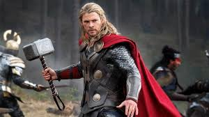
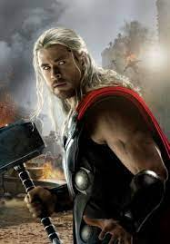
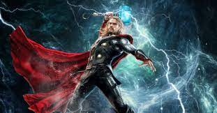

Thor

Originaire D'ASGARD et fils ODIN, il etait une prince un peu trop pretencieux et arogant jusqu'a ce qu'un jour il fit la betise de provoquer en guerre un royaume qui ettait en conflit avec "ASGARD".
Pris de cololere et fou de rage ODIN bani Thor d'ASGARD, lui pris MJÖLLNIR son MARTEAU et mis un enchantement qui stipule que <<"QUI CONQUE POSEDERA CE MARTEAU S'IL S'EN TROUVE DIGNE RECEVRA LE POUVOIR DU MARTEAU DE THOR">> et l'exila sur la planete TERRE. Etant indigne il fut priver de son marteau pour un moment, et incapable de le soulever car il n'etait plus digne de lui.
Bon on va se dire a tres bientôt sur le lien ci-apres pour plus information sur notre super hero probablement le plus fort des AVENGERS.

